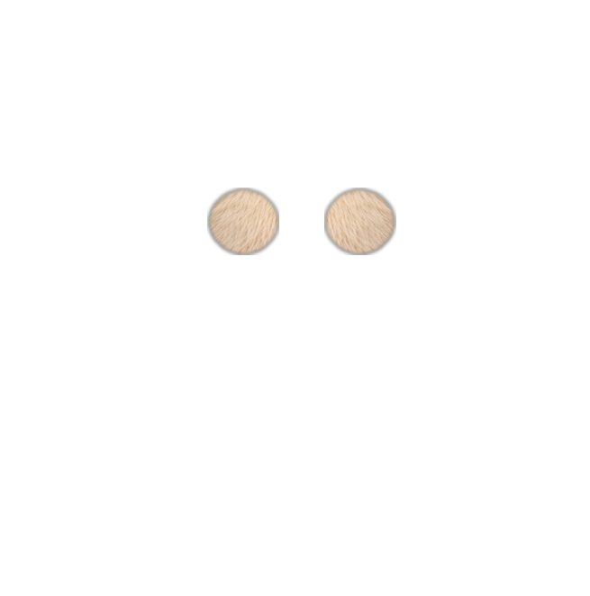
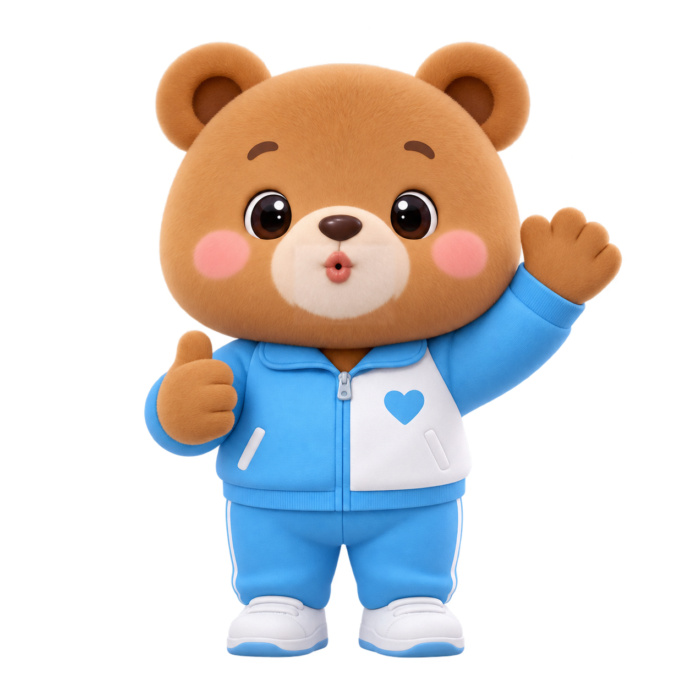

🏃 운동하기

🐶 콩이와 운동하기
10단계 건강 의자 체조 · 가볍게 몸 풀기
"편안하게 앉아서 천천히 따라해보세요."
운동 시작하기 ▶
오늘은 누구와 함께할까요?
🌞 오늘의 20분 활동
한 번에 시작하기

오늘은 누구와 무엇을 해볼까요? 아래 4가지 활동 중 마음에 드는 것을 꾹 눌러보세요.
마음에 드는 친구의 큰 카드를 편안하게 꾹 눌러보세요.
10단계 건강 의자 체조 · 가볍게 몸 풀기
재미있는 퍼즐 & 짝 맞추기 · 방 꾸미기

오늘의 계절과 날짜 · 재미있는 낱말 퀴즈

정겨운 옛 노래 감상 · 예쁜 꽃과 색칠하기
4명의 친구들이 어르신을 위해 준비한 오늘의 추천 활동이에요.
원하는 친구의 방 문을 열고 들어가 함께 이야기하고 활동해요.
몸을 천천히 움직여요
재미있게 놀아봐요
천천히 생각해봐요
좋아하는 것을 함께해요
함께하는 20분 체조 · 준비와 휴식 포함
콩이, 토리, 나비, 보리와 함께
편하게 앉아서 천천히 따라해요.
불편한 동작은 쉬어가셔도 괜찮아요.
AI가 무엇인지 알아보고 저녁 메뉴 추천 실습
궁금한 것을 쉬운 말로 물어보기
감사 문자, 편지, 따뜻한 소개글 만들기
말로 설명해 멋진 한 폭의 그림 그리기
요리 추천, 여행 일정, 일상 꿀팁 활용
부담 없이 배운 내용을 가볍게 짚어보기
반가운 인사와 오늘의 날씨, 기분 나누기
장독대, 해바라기, 고향 마을 사진 추억
내 나이가 어때서, 남행열차, 신나는 트로트
고향 마을과 봄 동산, 해바라기 그림
과일 짝 맞추기, 꽃과 계절 두뇌 놀이
글자 키우기, 하트 문자, 전화 받기
건강차, 무릎 체조, 찌개 비법 질문
볏단을 나르는 의좋은 형제 전래동화